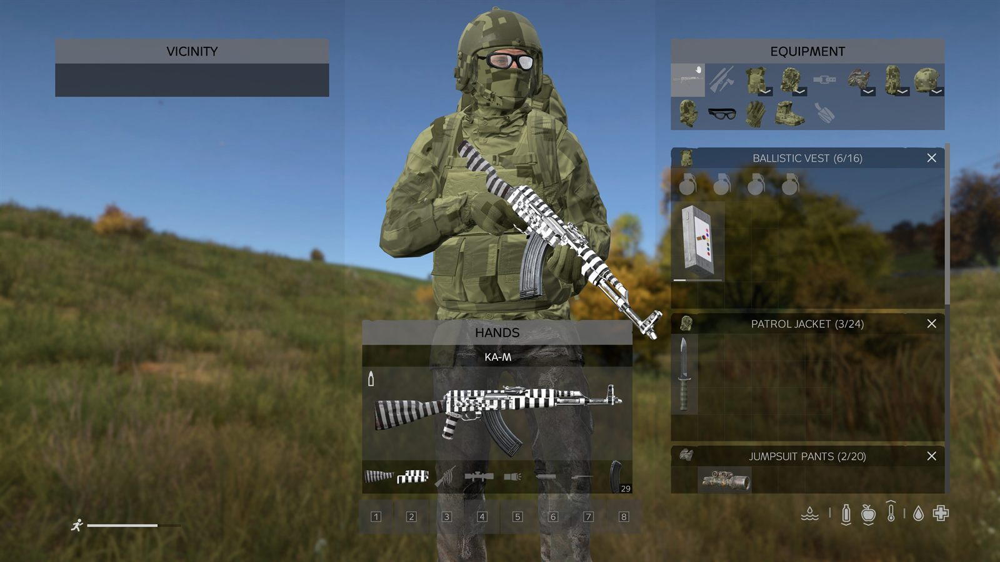
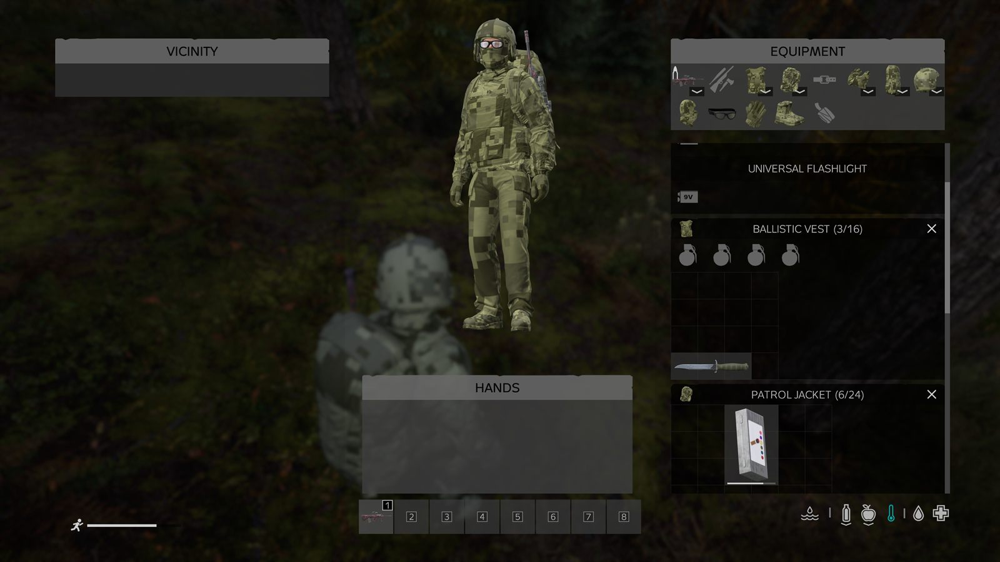

If an item can be painted, the Paint action appears when you combine it with a kit. If it cannot, nothing appears — there is nothing to memorise. This page explains why, and lists the weapons.
Weapons are painted part by part
In DayZ a rifle is not one object. The buttstock, the handguard, the muzzle device and the magazine are separate attachments, and the receiver is the weapon itself. PaintMod treats each as its own canvas.
Receiver
The weapon itself — the body you see when nothing is attached.
Buttstock
Wood, plastic, folding, precision: whichever one is fitted.
Handguard
Including rail and RIS variants.
Muzzle device
Suppressors and compensators.
Magazine
Box magazines and drums. Loose ammo piles, no.
Bayonets, lights, wraps
Everything that fits a weapon slot except optics.
That is what makes a matched loadout a project: a fully painted rifle is four or five separate paint jobs, and each one spends a charge.


Clothing and armour
Nearly all of it is paintable: plate carriers and vests, helmets, jackets, trousers, backpacks, masks, gloves and footwear. Vest attachments — the holster and the pouches — are paintable too, and separately from the vest. Three families are excluded, and the reasons are below.
The exceptions, and why
| Excluded | Reason |
|---|---|
| All ghillie gear suit, top, hood, bushrag, weapon wrap |
The strips are drawn with an alpha mask, so a pattern turns them into solid squares — it looks broken. And a painted ghillie would be real camouflage advantage, which this mod deliberately does not sell or grind. |
| Fur headdresses wolf, bear |
Same alpha-masked fur layers. Painting turns the strands into solid blocks. |
| Leather moccasins | An engine quirk: painting the worn model makes the whole shoe mesh invisible, and the player loses their feet visually. |
| Optics | Scopes and sights are excluded on purpose — a repainted optic is the one place where cosmetics start affecting what you can see. |
| Tools axes, knives, saws |
Melee items are outside the painted categories. |
Items that were painted before an exclusion came in clean themselves the next time the world loads. Nothing stays stuck in a broken state.

Every weapon on this server
Two things decide whether a gun can be painted. First, the owner's categories: pistols, shotguns and low-tier civilian guns are excluded by design, so painting stays a thing you do to gear worth carrying. Second, the model itself — a few vanilla weapons simply have no paintable texture zone, and this is a vanilla-only mod, so we do not add one.
| Weapon | Class | Paint | Reason |
|---|---|---|---|
Loading the weapon list… if this
line stays, the page could not load assets/weapons.js.
The short version: every assault rifle, SMG and marksman rifle is
paintable except the FN FAL and the SVD, whose vanilla models
carry no texture zone. Pistols, shotguns and the low-tier civilian
guns are excluded by design. | |||
This table is generated from the game's own configs crossed with our loot table — it lists the firearms that actually spawn on this Chernarus, and the verdict is derived, not typed in by hand.
Camo density adapts to the item
A texture is mapped onto each item's own UV layout, so one tile does not come out the same size on a balaclava as on a backpack. For the five advanced camo patterns, rather than making you fiddle with a size slider, the mod picks a density tier from the item so the pattern reads at roughly the same real-world scale everywhere. The five stencils ship at a single density and are not retiled per item.
| Tier (advanced camo only) | Items | Tile |
|---|---|---|
| Small gear | Masks, headgear, gloves, boots, weapon parts | Loosest |
| Garments | Tops, trousers, vests | Medium |
| Large | Backpacks | Densest |
A stencil still looks different on a jacket than in the preview grid, but for a different reason: the preview shows one flat tile, while on the jacket that same single tile is stretched and repeated by the item's own UV layout.